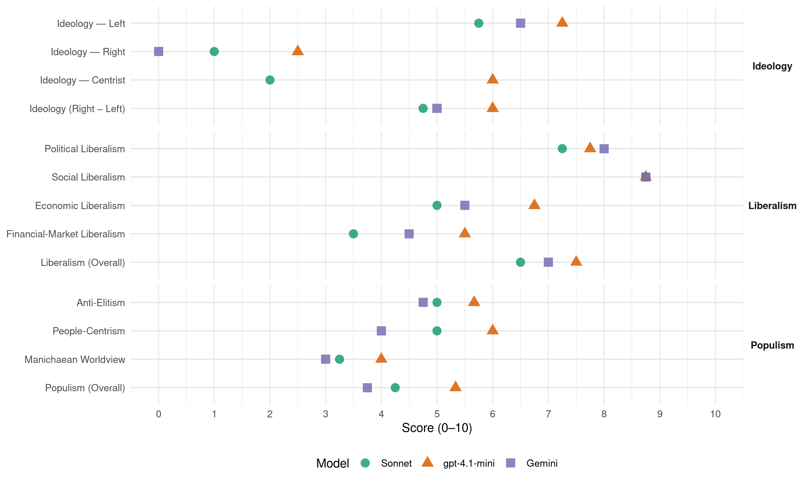

PSD (Mexico, 2009)
manifesto_id 171310_200907
Get full text: This site shows derived annotations and short verbatim quotes only. The full manifesto text is © Manifesto Project / WZB — obtain it via manifesto-project.wzb.eu using the manifesto_id above.
Headline scores
| Dimension | Sonnet | gpt-4.1-mini | Gemini |
|---|---|---|---|
| Populism (Overall) | 4.2 | 5.3 | 3.8 |
| Anti-Elitism | 5.0 | 5.7 | 4.8 |
| People-Centrism | 5.0 | 6.0 | 4.0 |
| Manichaean Worldview | 3.2 | 4.0 | 3.0 |
| Ideology (Right − Left) | 4.8 | 6.0 | 5.0 |
| Liberalism (Overall) | 6.5 | 7.5 | 7.0 |
| Political Liberalism | 7.2 | 7.8 | 8.0 |
| Social Liberalism | 8.8 | 8.8 | 8.8 |
| Economic Liberalism | 5.0 | 6.8 | 5.5 |
| Financial-Market Liberalism | 3.5 | 5.5 | 4.5 |
Evidence per dimension
Economic Liberalism
Gemini · score 3.0 · verified · chunk 1
“fracaso del modelo neoliberal”
internacional sin precedentes, para evidenciar el fracaso del modelo neoliberal y sus políticas contraccionistas.
Gemini · score 7.0 · verified · chunk 2
“adopta la economía de mercado”
un modelo que adopta la economía de mercado, pero no como un dogma, sino como
Gemini · score 6.0 · verified · chunk 3
“garantizar la competitividad entre las empresas nacionales y evitar prácticas monopólicas”
El Estado social-inversor debe garantizar la competitividad entre las empresas nacionales y evitar prácticas monopólicas de empresas públicas o privadas.
Gemini · score 6.0 · verified · chunk 4
“sustentarse en una economía de mercado con fuerte peso”
la globalización se ha caracterizado por sustentarse en una economía de mercado con fuerte peso del sector privado, y por generar una estructura mundial crecientemente
gpt-4.1-mini · score 7.0 · verified · chunk 1
“un modelo económico basado en un Estado Social Inversor, que aproveche las oportunidades de la globalización”
…a fin de profundizar en la democracia, implantar un modelo económico basado en un Estado Social Inversor, que aproveche las oportunidades de la globalización, instaurar una sociedad de derechos y bienestar, y todo ello coadyuvará en la generación de las condiciones para la realización de la felicidad de la ciudadanía.
gpt-4.1-mini · score 6.0 · verified · chunk 2
“libre competencia de los mercados”
…el Estado, a través de la política industrial, tiene que asegurar la competencia entre empresas mediante el diseño y perfeccionamiento de mecanismos que la promuevan en todos los mercados donde sea técnicamente posible, evitando y combatiendo monopolios y acuerdos entre empresas privadas o públicas que perjudiquen al ciudadano.
gpt-4.1-mini · score 7.0 · verified · chunk 3
“la competitividad entre las empresas nacionales y evitar prácticas monopólicas”
…El Estado social-inversor debe garantizar la competitividad entre las empresas nacionales y evitar prácticas monopólicas de empresas públicas o privadas. Se luchará por fortalecer las comisiones reguladoras especialmente la de competencia económica…
gpt-4.1-mini · score 7.0 · verified · chunk 4
“reforma fiscal, desregulación económica, apertura financiera y de las telecomunicaciones”
Realizar una adecuada reforma fiscal, desregulación económica, apertura financiera y de las telecomunicaciones con la finalidad de que exista una mayor fluidez de inversión extranjera en la economía nacional.
Sonnet · score 4.0 · verified · chunk 1
“políticas keynesianas o poskeynesianas”
el imperativo de asumir políticas keynesianas o poskeynesianas para enfrentar la crisis y la recesión, y retomar la senda del crecimiento
Sonnet · score 5.0 · mixed · chunk 2
“adopta la economía de mercado, pero no como un dogma”
un modelo que adopta la economía de mercado, pero no como un dogma, sino como un instrumento para hacer del capitalismo un sistema más organizado y humano
Sonnet · score 6.0 · mixed · chunk 3
“Estado Social Inversor que subsane las insuficiencias del mercado”
Promover un Estado Social Inversor que subsane las insuficiencias del mercado que sea activo en la inversión, el crecimiento y la distribución del ingreso
Sonnet · score 6.0 · verified · chunk 4
“apertura financiera y de las telecomunicaciones”
Realizar una adecuada reforma fiscal, desregulación económica, apertura financiera y de las telecomunicaciones con la finalidad de que exista una mayor fluidez de inversión extranjera
Financial-Market Liberalism
Gemini · score 2.0 · verified · chunk 1
“la especulación financiera ha sido mayúscula”
estancados, lo que en la práctica constituye un retroceso. En cambio, la especulación financiera ha sido mayúscula: ha contribuido a generar enormes fortunas
Gemini · score 4.0 · verified · chunk 2
“regulación de la actividad especulativa”
retome su activismo económico, lo que incluye una mayor regulación de la actividad especulativa y de los monopolios.
Gemini · score 5.0 · verified · chunk 3
“adopten invariablemente previsiones prudenciales que garanticen la estabilidad del sistema”
entidades financieras y se verificará que estas adopten invariablemente previsiones prudenciales que garanticen la estabilidad del sistema en su conjunto.
Gemini · score 7.0 · verified · chunk 4
“apertura financiera y de las telecomunicaciones con la”
adecuada reforma fiscal, desregulación económica, apertura financiera y de las telecomunicaciones con la finalidad de que exista una mayor fluidez de inversión extranjera
gpt-4.1-mini · score 4.0 · verified · chunk 1
“la especulación financiera ha sido mayúscula: ha contribuido a generar enormes fortunas”
En cambio, la especulación financiera ha sido mayúscula: ha contribuido a generar enormes fortunas en pocos años, y el país sigue siendo rehén de los capitales peregrinos y los caprichos bursátiles.
gpt-4.1-mini · score 5.0 · verified · chunk 2
“la política financiera”
Con relación a la actividad del Banco de México, ya no debe seguir siendo exclusivamente la de mantener la estabilidad macroeconómica y el control de la inflación. Debe concebirse un esquema en el cual es preferible realizar inversión productiva en lugar de mantener un número grande, que sobrepasa al necesario, de reservas internacionales guardadas en las arcas del Banco.
gpt-4.1-mini · score 7.0 · verified · chunk 3
“se impulsará una revisión de la misma para garantizar que las transacciones de estos mercados tengan invariablemente un subyacente en la economía real”
…En consecuencia, se impulsará una revisión de la misma para garantizar que las transacciones de estos mercados tengan invariablemente un subyacente en la economía real y contribuyan a su crecimiento. Se promoverá un incremento en las atribuciones de las instituciones de supervisión a entidades financieras y se verificará que estas adopten invariablemente previsiones prudenciales que garanticen la estabilidad del sistema en su conjunto.
gpt-4.1-mini · score 6.0 · verified · chunk 4
“democratización de las organizaciones de la gobernanza mundial”
Promover la democratización de las organizaciones de la gobernanza mundial (la ONU, el FMI, el BM, la OMC, entre otras). Dotar de mayores facultades a la Asamblea General de la ONU, tanto para democratizar su funcionamiento general, como para restituir a ese espacio internacional de deliberación su papel de asamblea resolutiva mundial.
Sonnet · score 3.0 · verified · chunk 1
“especulación financiera ha sido mayúscula”
la especulación financiera ha sido mayúscula: ha contribuido a generar enormes fortunas en pocos años, y el país sigue siendo rehén de los capitales peregrinos
Sonnet · score 4.0 · verified · chunk 2
“predominio del capital especulativo y los monopolios”
deja intocados desequilibrios económicos fundamentales como los que tienen que ver con el predominio del capital especulativo y los monopolios
Sonnet · score 5.0 · mixed · chunk 3
“revisión de la misma para garantizar que las transacciones”
se impulsará una revisión de la misma para garantizar que las transacciones de estos mercados tengan invariablemente un subyacente en la economía real y contribuyan a su crecimiento
Sonnet · score 5.0 · mixed · chunk 4
“dominio del capital especulativo”
con la creciente internacionalización de los flujos y redes financieras y del dominio del capital especulativo; con el auge de tratados y acuerdos de libre comercio
Political Liberalism
Gemini · score 8.0 · verified · chunk 1
“compromiso con las instituciones democráticas”
Por ello el PSD no deja de reafirmar su compromiso con las instituciones democráticas, y con el imperativo de realizar reformas
Gemini · score 8.0 · verified · chunk 2
“democracia representativa es un primer paso”
Para el PSD la democracia representativa es un primer paso indispensable, porque crea el marco legal-institucional
Gemini · score 8.0 · verified · chunk 3
“forjar una democracia representativa promueve los derechos políticos”
enfrentamiento de ideas; empeñado en forjar una democracia representativa promueve los derechos políticos para la institucionalización de una
Gemini · score 8.0 · verified · chunk 4
“construir ciudadanía democrática, con el fin de que”
garantías sociales efectivas para los grupos más vulnerables, y construir ciudadanía democrática, con el fin de que la pobreza no sea usada para la manipulación
gpt-4.1-mini · score 8.0 · verified · chunk 1
“la democracia ha creado hasta ahora el mejor sistema para garantizar, tanto el ejercicio de las libertades individuales como los derechos de la colectividad”
De todos los regímenes políticos que el ser humano se ha dado para organizar su actividad política, la democracia ha creado hasta ahora el mejor sistema para garantizar, tanto el ejercicio de las libertades individuales como los derechos de la colectividad. El ejercicio de las libertades presupone que la democracia está sustentada en los mismos ideales, principios y valores que dan sustento a las personas, a la sociedad y a la política.
gpt-4.1-mini · score 7.0 · verified · chunk 2
“la democracia representativa es un primer paso indispensable”
Para el PSD la democracia representativa es un primer paso indispensable, porque crea el marco legal-institucional que permite el ejercicio de las libertades ciudadanas, pero que debe profundizarse para que esas libertades se traduzcan en derechos efectivos de la ciudadanía.
gpt-4.1-mini · score 8.0 · verified · chunk 3
“la voluntad del pueblo es la base del poder público”
…a participar en el gobierno directamente o mediante representantes electos libremente y a acceder a los puestos de funcionario público en condiciones de igualdad apelando a que la voluntad del pueblo es la base del poder público; a presentar peticiones a toda autoridad y a obtener una pronta resolución de estas con el objetivo de hacer transparente la actividad del gobierno a través de la rendición de cuentas;
gpt-4.1-mini · score 8.0 · verified · chunk 4
“fortalecimiento con base en la autonomía, ciudadanización, profesionalización”
El fortalecimiento con base en la autonomía, ciudadanización, profesionalización y el funcionamiento eficaz, eficiente y transparente de las comisiones nacional y estatales de derechos humanos.
Sonnet · score 7.0 · verified · chunk 1
“profundizar en la democracia”
reformas políticas, económicas y sociales, a fin de profundizar en la democracia, implantar un modelo económico basado en un Estado Social Inversor
Sonnet · score 7.0 · verified · chunk 2
“consolidar la pluralidad en la integración de los órganos legislativos”
una reforma electoral debe consolidar la pluralidad en la integración de los órganos legislativos, de tal modo que la representación proporcional refleje con fidelidad
Sonnet · score 7.0 · verified · chunk 3
“elecciones limpias, con resultados claros y robustos”
promueve los derechos políticos para la institucionalización de una oposición real con una base de apoyo con posibilidad de incrementarse y ganar poder a través de elecciones limpias, con resultados claros y robustos, sustentadas en reglas justas
Sonnet · score 8.0 · verified · chunk 4
“democratización de los organismos gobernantes”
Promover la democratización de los organismos gobernantes de la globalización (la ONU, el FMI, el BM, la OMC, entre otras)
Liberalism (Overall)
Gemini · score 6.0 · verified · chunk 1
“compromiso con las instituciones democráticas”
Por ello el PSD no deja de reafirmar su compromiso con las instituciones democráticas, y con el imperativo de realizar reformas
Gemini · score 7.0 · verified · chunk 2
“adopta la economía de mercado”
un modelo que adopta la economía de mercado, pero no como un dogma, sino como
Gemini · score 7.0 · verified · chunk 3
“forjar una democracia representativa promueve los derechos políticos”
enfrentamiento de ideas; empeñado en forjar una democracia representativa promueve los derechos políticos para la institucionalización de una
Gemini · score 8.0 · verified · chunk 4
“construir ciudadanía democrática, con el fin de que”
garantías sociales efectivas para los grupos más vulnerables, y construir ciudadanía democrática, con el fin de que la pobreza no sea usada para la manipulación
gpt-4.1-mini · score 7.0 · verified · chunk 1
“la democracia ha creado hasta ahora el mejor sistema para garantizar, tanto el ejercicio de las libertades individuales como los derechos de la colectividad”
De todos los regímenes políticos que el ser humano se ha dado para organizar su actividad política, la democracia ha creado hasta ahora el mejor sistema para garantizar, tanto el ejercicio de las libertades individuales como los derechos de la colectividad. El ejercicio de las libertades presupone que la democracia está sustentada en los mismos ideales, principios y valores que dan sustento a las personas, a la sociedad y a la política.
gpt-4.1-mini · score 7.0 · verified · chunk 2
“la democracia representativa es un primer paso indispensable”
Para el PSD la democracia representativa es un primer paso indispensable, porque crea el marco legal-institucional que permite el ejercicio de las libertades ciudadanas, pero que debe profundizarse para que esas libertades se traduzcan en derechos efectivos de la ciudadanía.
gpt-4.1-mini · score 8.0 · verified · chunk 3
“la voluntad del pueblo es la base del poder público”
…a participar en el gobierno directamente o mediante representantes electos libremente y a acceder a los puestos de funcionario público en condiciones de igualdad apelando a que la voluntad del pueblo es la base del poder público; a presentar peticiones a toda autoridad y a obtener una pronta resolución de estas con el objetivo de hacer transparente la actividad del gobierno a través de la rendición de cuentas;
gpt-4.1-mini · score 8.0 · verified · chunk 4
“fortalecimiento con base en la autonomía, ciudadanización, profesionalización”
El fortalecimiento con base en la autonomía, ciudadanización, profesionalización y el funcionamiento eficaz, eficiente y transparente de las comisiones nacional y estatales de derechos humanos.
Sonnet · score 6.0 · verified · chunk 1
“instaurar una sociedad de derechos”
reformas estructurales que permitan instaurar una Sociedad de Derechos y de bienestar general, sin exclusiones
Sonnet · score 6.0 · verified · chunk 2
“Estado socialdemócrata; liberal y representativo”
Se define como un Estado socialdemócrata; liberal y representativo, un modelo que adopta la economía de mercado
Sonnet · score 7.0 · verified · chunk 3
“elecciones limpias, con resultados claros y robustos”
promueve los derechos políticos para la institucionalización de una oposición real con una base de apoyo con posibilidad de incrementarse y ganar poder a través de elecciones limpias, con resultados claros y robustos
Sonnet · score 7.0 · verified · chunk 4
“garantizar los derechos de homosexuales, travestis, transexuales”
Eliminar políticas y prácticas de exclusión laboral, escolar o familiar por determinada preferencia sexual y garantizar los derechos de homosexuales, travestis, transexuales
Anti-Elitism
Gemini · score 7.0 · verified · chunk 1
“el dominio de una oligarquía tripartidista”
es el sistema de partidos imperante. El dominio de una oligarquía tripartidista, no sólo ha cerrado vías a la competencia
Gemini · score 6.0 · verified · chunk 2
“existencia de una oligarquía tripartidista”
freno para la consolidación democrática, es la existencia de una oligarquía tripartidista que tiene el control del poder
Gemini · score 3.0 · verified · chunk 3
“liberación de los ciudadanos de la dominación de los poderes fácticos”
Propone la liberación de los ciudadanos de la dominación de los poderes fácticos y de su inminente amenaza de secuestro del Estado
Gemini · score 3.0 · verified · chunk 4
“evitando que los principales directivos ocupen esos cargos por acuerdos políticos”
democratización de las Federaciones Nacionales del Deporte evitando que los principales directivos ocupen esos cargos por acuerdos políticos y que en su lugar se impulse el servicio profesional
gpt-4.1-mini · score 7.0 · verified · chunk 1
“la vieja política beneficia exclusivamente a una minoría de privilegiados”
…han decepcionado a la ciudadanía, a tal grado que ya no distingue entre buena y mala política, sino que toda ella se encuentra carente de principios y fines favorables a la ciudadanía y al país. Además, la vieja política beneficia exclusivamente a una minoría de privilegiados, quienes la utilizan para continuar en el poder indefinidamente, y a quienes les conviene el descrédito de la política para que las personas se desentiendan de ella, y la elite en el poder sea la única que se apropie de ella, y de este modo perpetuar las desigualdades económicas, políticas y sociales que tanto daño hacen a nuestro país.
gpt-4.1-mini · score 7.0 · verified · chunk 2
“la existencia de una oligarquía tripartidista que tiene el control del poder legislativo federal”
…la concentración del poder en el Ejecutivo Federal y en los ejecutivos estatales, lo que ha generado la falta de incentivos para la formación de acuerdos en el ámbito legislativo y para la colaboración entre los poderes públicos. Asimismo, otro importante freno para la consolidación democrática, es la existencia de una oligarquía tripartidista que tiene el control del poder legislativo federal, de ejecutivos y legislativos estatales y de casi todas las alcaldías…
gpt-4.1-mini · score 3.0 · verified · chunk 3
“la dominación de los poderes fácticos y de su inminente amenaza de secuestro del Estado”
…la liberación de los ciudadanos de la dominación de los poderes fácticos y de su inminente amenaza de secuestro del Estado, asegura la libertad del ciudadano frente al poder militar, los poderes extranjeros, las oligarquías económicas, la jerarquía religiosa y los partidos políticos totalitarios.
gpt-4.1-mini · score 5.0 · mixed · chunk 4
“los principales directivos ocupen esos cargos por acuerdos políticos”
democratización de las Federaciones Nacionales del Deporte evitando que los principales directivos ocupen esos cargos por acuerdos políticos y que en su lugar se impulse el servicio profesional de carrera para los mandos medios y directivos del deporte a nivel nacional.
Sonnet · score 7.0 · verified · chunk 1
“dominio de una oligarquía tripartidista”
El dominio de una oligarquía tripartidista, no sólo ha cerrado vías a la competencia equitativa y a la participación plural
Sonnet · score 6.0 · verified · chunk 2
“oligarquía tripartidista que tiene el control”
otro importante freno para la consolidación democrática, es la existencia de una oligarquía tripartidista que tiene el control del poder legislativo federal
Sonnet · score 3.0 · verified · chunk 3
“poderes fácticos y de su inminente amenaza de secuestro del Estado”
Propone la liberación de los ciudadanos de la dominación de los poderes fácticos y de su inminente amenaza de secuestro del Estado, asegura la libertad del ciudadano frente al poder militar, los poderes extranjeros, las oligarquías económicas
Sonnet · score 4.0 · verified · chunk 4
“ante su incompetencia por generar mayor crecimiento”
del G-8 quienes determinan la marcha económica global, pero que cada vez tienen que recurrir a más naciones… ante su incompetencia por generar mayor crecimiento y distribución de la riqueza
Ideology — Centrist
gpt-4.1-mini · score 6.0 · verified · chunk 1
“la ciudadanía no es sólo hecho jurídico, sino que implica la capacidad y la disposición para intervenir en la vida pública”
…la construcción de ciudadanía, entendiendo por esta al conjunto de personas que asumen y ejercen sus derechos bajo el Esado mexicano, y en el cual se encuentran en constante uso como recurso para la autogestión sobre políticas de resolución de problemas en el ejercicio legal y constante de sus derechos. La ciudadanía no es sólo hecho jurídico, sino que implica la capacidad y la disposición para intervenir en la vida pública de manera consciente, informada y responsable, con ánimo tolerante, con disposición para ofrecer y atender razones, con la mira en el interés de la colectividad.
gpt-4.1-mini · score 6.0 · verified · chunk 2
“la pluralidad en la integración de los órganos legislativos”
…una reforma electoral debe consolidar la pluralidad en la integración de los órganos legislativos, de tal modo que, independientemente del número de representantes que los integren, la representación proporcional refleje con fidelidad el porcentaje de la votación obtenida por cada partido político…
gpt-4.1-mini · score 6.0 · verified · chunk 3
“la voluntad del pueblo es la base del poder público”
…a participar en el gobierno directamente o mediante representantes electos libremente y a acceder a los puestos de funcionario público en condiciones de igualdad apelando a que la voluntad del pueblo es la base del poder público; a presentar peticiones a toda autoridad y a obtener una pronta resolución de estas con el objetivo de hacer transparente la actividad del gobierno a través de la rendición de cuentas;
gpt-4.1-mini · score 6.0 · verified · chunk 4
“la soberanía debe interpretarse como una praxis activa de inserción”
Asimismo, la soberanía debe interpretarse como una praxis activa de inserción y modelación de la globalización. Esto significa que para el PSD la política exterior debe regirse por una conjunción de la aplicación de sus principios históricos impresos en la Constitución, y de un pragmatismo que le proporcione beneficios económicos concretos.
Sonnet · score 2.0 · verified · chunk 1
“Agenda Socialdemócrata para el México”
lo que consideramos debe ser la Agenda Socialdemócrata para el México del siglo XXI
Sonnet · score 2.0 · verified · chunk 2
“sin poner en riesgo la representatividad y la pluralidad”
El PSD lucha por hacer más eficiente nuestra democracia, pero sin poner en riesgo la representatividad y la pluralidad
Sonnet · score 2.0 · verified · chunk 3
“principios y objetivos socialdemócratas”
Las acciones que proponemos para el cumplimiento de estos principios y objetivos socialdemócratas son Con relación a la inversión en las personas
Sonnet · score 2.0 · verified · chunk 4
“pragmatismo que le proporcione beneficios económicos”
la política exterior debe regirse por una conjunción de la aplicación de sus principios históricos impresos en la Constitución, y de un pragmatismo que le proporcione beneficios económicos concretos
Ideology — Left
Gemini · score 8.0 · verified · chunk 1
“evidenciar el fracaso del modelo neoliberal”
tuvo que estallar una crisis financiera internacional sin precedentes, para evidenciar el fracaso del modelo neoliberal y sus políticas contraccionistas.
Gemini · score 6.0 · verified · chunk 2
“Estado Social de Derecho”
un sistema de justicia ineficaz y corrupto, que propicia la impunidad, y en la ausencia de un Estado Social de Derecho, se pueden encontrar
Gemini · score 6.0 · verified · chunk 3
“reforma fiscal progresiva con base en el principio de “quien gana más, paga más””
Se promoverá una reforma fiscal progresiva con base en el principio de “quien gana más, paga más”, fundamentalmente a través de elevar
Gemini · score 6.0 · verified · chunk 4
“un piso mínimo de bienestar sea proveído por el Estado”
resten dignidad o hagan objeto de manipulación a los beneficiarios, es necesario que un piso mínimo de bienestar sea proveído por el Estado. Se trata de que el acceso a los mínimos
gpt-4.1-mini · score 8.0 · verified · chunk 1
“superar las injusticias, las desigualdades, la pobreza, la discriminación, la exclusión”
…la socialdemocracia lucha, en el marco de la democracia y el Estado de derecho, por llegar al poder a fin de llevar a cabo reformas políticas, económicas y sociales que permitan superar las injusticias, las desigualdades, la pobreza, la discriminación, la exclusión, el autoritarismo, la violación de los derechos humanos, el terrorismo, la destrucción ecológica… en fin todas aquellas estructuras y procesos que impidan el establecimiento de una sociedad de derechos y la creación de un marco social que permita a todas las personas buscar su felicidad.
gpt-4.1-mini · score 7.0 · verified · chunk 2
“redistribución del ingreso”
…la redistribución del ingreso debe ser un fin ajeno al sistema impositivo, así que un sistema progresivo que grave más a los que más tienen no es viable. La redistribución del ingreso se logrará mediante gasto público productivo…
gpt-4.1-mini · score 7.0 · verified · chunk 3
“una reforma fiscal progresiva con base en el principio de “quien gana más, paga más””
…Se promoverá una reforma fiscal progresiva con base en el principio de “quien gana más, paga más”, fundamentalmente a través de elevar el ISR a los sectores de mayores ingresos. Se fortalecerá la capacidad redistributiva del impuesto sobre la renta por medio de una diferenciación mayor de las tarifas según los niveles de ingreso…
gpt-4.1-mini · score 7.0 · verified · chunk 4
“programas para llevar a cabo las reformas que permitan generalizar el bienestar”
Impulsan programas de gobierno para llevar a cabo las reformas que permitan generalizar el bienestar y terminar con todo tipo de exclusión.
Sonnet · score 7.0 · verified · chunk 1
“fracaso del modelo neoliberal”
tuvo que estallar una crisis financiera internacional sin precedentes, para evidenciar el fracaso del modelo neoliberal y sus políticas contraccionistas
Sonnet · score 6.0 · verified · chunk 2
“Estado Social Inversor”
Como un modelo alternativo al estatismo y al neoliberalismo, el PSD propone el Estado Social Inversor
Sonnet · score 4.0 · verified · chunk 3
“reforma fiscal progresiva con base en el principio”
Se promoverá una reforma fiscal progresiva con base en el principio de ‘quien gana más, paga más’, fundamentalmente a través de elevar el ISR a los sectores de mayores ingresos
Sonnet · score 6.0 · verified · chunk 4
“principios y objetivos socialdemócratas”
Las acciones que proponemos para el cumplimiento de estos principios y objetivos socialdemócratas son Una Sociedad de Derechos presupone: La construcción de un piso mínimo de bienestar
Ideology (Right − Left)
Gemini · score 7.0 · verified · chunk 1
“evidenciar el fracaso del modelo neoliberal”
tuvo que estallar una crisis financiera internacional sin precedentes, para evidenciar el fracaso del modelo neoliberal y sus políticas contraccionistas.
Gemini · score 5.0 · verified · chunk 2
“Estado Social de Derecho”
un sistema de justicia ineficaz y corrupto, que propicia la impunidad, y en la ausencia de un Estado Social de Derecho, se pueden encontrar
Gemini · score 5.0 · verified · chunk 3
“reforma fiscal progresiva con base en el principio de “quien gana más, paga más””
Se promoverá una reforma fiscal progresiva con base en el principio de “quien gana más, paga más”, fundamentalmente a través de elevar
Gemini · score 3.0 · verified · chunk 4
“un piso mínimo de bienestar sea proveído por el Estado”
resten dignidad o hagan objeto de manipulación a los beneficiarios, es necesario que un piso mínimo de bienestar sea proveído por el Estado. Se trata de que el acceso a los mínimos
gpt-4.1-mini · score 7.0 · verified · chunk 1
“la socialdemocracia lucha, en el marco de la democracia y el Estado de derecho”
…la socialdemocracia lucha, en el marco de la democracia y el Estado de derecho, por llegar al poder a fin de llevar a cabo reformas políticas, económicas y sociales que permitan superar las injusticias, las desigualdades, la pobreza, la discriminación, la exclusión, el autoritarismo, la violación de los derechos humanos, el terrorismo, la destrucción ecológica… en fin todas aquellas estructuras y procesos que impidan el establecimiento de una sociedad de derechos y la creación de un marco social que permita a todas las personas buscar su felicidad.
gpt-4.1-mini · score 6.0 · verified · chunk 2
“la existencia de una oligarquía tripartidista que tiene el control del poder legislativo federal”
…otro importante freno para la consolidación democrática, es la existencia de una oligarquía tripartidista que tiene el control del poder legislativo federal, de ejecutivos y legislativos estatales y de casi todas las alcaldías…
gpt-4.1-mini · score 5.0 · verified · chunk 3
“la voluntad del pueblo es la base del poder público”
…a participar en el gobierno directamente o mediante representantes electos libremente y a acceder a los puestos de funcionario público en condiciones de igualdad apelando a que la voluntad del pueblo es la base del poder público; a presentar peticiones a toda autoridad y a obtener una pronta resolución de estas con el objetivo de hacer transparente la actividad del gobierno a través de la rendición de cuentas;
gpt-4.1-mini · score 6.0 · verified · chunk 4
“programas para llevar a cabo las reformas que permitan generalizar el bienestar”
Impulsan programas de gobierno para llevar a cabo las reformas que permitan generalizar el bienestar y terminar con todo tipo de exclusión.
Sonnet · score 6.0 · verified · chunk 1
“fracaso del modelo neoliberal”
para evidenciar el fracaso del modelo neoliberal y sus políticas contraccionistas
Sonnet · score 5.0 · verified · chunk 2
“modelo alternativo al estatismo y al neoliberalismo”
Como un modelo alternativo al estatismo y al neoliberalismo, el PSD propone el Estado Social Inversor
Sonnet · score 3.0 · verified · chunk 3
“reforma fiscal progresiva con base en el principio”
Se promoverá una reforma fiscal progresiva con base en el principio de ‘quien gana más, paga más’, fundamentalmente a través de elevar el ISR a los sectores de mayores ingresos
Sonnet · score 5.0 · verified · chunk 4
“principios y objetivos socialdemócratas”
Las acciones que proponemos para el cumplimiento de estos principios y objetivos socialdemócratas son Una Sociedad de Derechos presupone: La construcción de un piso mínimo de bienestar
Ideology — Right
Gemini · score 0.0 · verified · chunk 1
“la derecha ha hecho avanzar su agenda conservadora”
indígenas, etc., y que en distintos estados la derecha ha hecho avanzar su agenda conservadora (por ejemplo, contraria a la despenalización
Gemini · score 0.0 · verified · chunk 2
“populismo de derecha”
ni mucho menos el de seguir achicando al gobierno como lo quiere el populismo de derecha. Tampoco queremos que
gpt-4.1-mini · score 2.0 · verified · chunk 1
“la ofensiva legislativa de la derecha y los procesos de militarización”
…subsistan estructuras y fuerzas autoritarias, la ofensiva legislativa de la derecha y los procesos de militarización y control policiaco de la ciudadanía, en un contexto de violencia y desencanto democrático.
gpt-4.1-mini · score 3.0 · verified · chunk 2
“el populismo de derecha”
…no estamos proponiendo ni reducir el número de los representantes populares, ni el de los partidos, ni mucho menos el de seguir achicando al gobierno como lo quiere el populismo de derecha…
gpt-4.1-mini · score 2.0 · verified · chunk 3
“la liberación de los ciudadanos de la dominación de los poderes fácticos”
…la liberación de los ciudadanos de la dominación de los poderes fácticos y de su inminente amenaza de secuestro del Estado, asegura la libertad del ciudadano frente al poder militar, los poderes extranjeros, las oligarquías económicas, la jerarquía religiosa y los partidos políticos totalitarios.
gpt-4.1-mini · score 3.0 · verified · chunk 4
“nacionalismos agresivos o cerrados, xenofobias, racismos, discriminaciones”
siguen existiendo nacionalismos agresivos o cerrados, xenofobias, racismos, discriminaciones como fuentes de guerras, conflictos, persecuciones y violaciones a los derechos humanos.
Sonnet · score 1.0 · verified · chunk 1
“populismo de derecha”
no estamos proponiendo ni reducir el número de los representantes populares, ni el de los partidos, ni mucho menos el de seguir achicando al gobierno como lo quiere el populismo de derecha
Sonnet · score 1.0 · verified · chunk 2
“populismo de derecha”
ni mucho menos el de seguir achicando al gobierno como lo quiere el populismo de derecha
Sonnet · score 1.0 · verified · chunk 3
“flujos migratorios dentro del territorio nacional”
se reflejan con crudeza en los graves problemas de desnutrición, la baja calidad de la educación, el desempleo, la desintegración familiar y, desde luego, los crecientes flujos migratorios dentro del territorio nacional y, sobre todo, hacia los Estados Unidos
Sonnet · score 1.0 · verified · chunk 4
“respeto a la autodeterminación de los pueblos”
La política exterior mexicana debe guiarse por los principios tradicionales: el respeto a la autodeterminación de los pueblos; la igualdad jurídica de los Estados; la no intervención
Manichaean Worldview
Gemini · score 4.0 · verified · chunk 1
“quienes nada tuvimos con ver con el entallamiento”
generar como mínimo un millón de empleos anuales. Justamente cuando se espera el retorno de miles de mexicanos de Estados Unidos, ante su recesión, para el 2009 solamente se espera generar 300 mil empleos, y se espera una cifra todavía indeterminada de despidos. La injusticia es evidente: quienes nada tuvimos con ver con el entallamiento de la crisis, nuevamente tenemos que pagar sus costos
Gemini · score 3.0 · verified · chunk 2
“lucrado con la pobreza y la marginación”
vieja política clientelar y corporativa, que es fomentada desde sectores gubernamentales, a nivel federal, estatal y municipal, y partidos que han lucrado con la pobreza y la marginación, especialmente de las
Gemini · score 2.0 · verified · chunk 3
“amenaza de secuestro del Estado”
dominación de los poderes fácticos y de su inminente amenaza de secuestro del Estado, asegura la libertad del ciudadano frente al poder
gpt-4.1-mini · score 5.0 · mixed · chunk 1
“la corrupción, la impunidad y la muerte”
Por todas partes se extiende la lógica violenta que impone el mercado del narcotráfico. Las inmensas ganancias que producen la venta de drogas, son capaces de reciclar para siempre un sistema en donde impera la corrupción, la impunidad y la muerte. No alcanzarán las balas, ni serán suficientes todas las víctimas para desactivar ese sistema.
gpt-4.1-mini · score 5.0 · mixed · chunk 2
“el narcotráfico ha contaminado los procesos electorales”
…el dinero sigue siendo un factor distorsionador y decisivo, más ahora que el narcotráfico ha contaminado los procesos electorales. Ante ello, nuestro partido ha hecho diversas propuestas para reducir el financiamiento público a los partidos…
gpt-4.1-mini · score 4.0 · verified · chunk 3
“la dominación de los poderes fácticos y de su inminente amenaza de secuestro del Estado”
…la liberación de los ciudadanos de la dominación de los poderes fácticos y de su inminente amenaza de secuestro del Estado, asegura la libertad del ciudadano frente al poder militar, los poderes extranjeros, las oligarquías económicas, la jerarquía religiosa y los partidos políticos totalitarios.
gpt-4.1-mini · score 4.0 · mixed · chunk 4
“la guerra contra el narcotráfico sólo generará militarización”
En este contexto, la guerra contra el narcotráfico sólo generará militarización, violación a los derechos humanos, miles de muertes, incertidumbre y mayor inseguridad, especialmente entre la ciudadanía.
Sonnet · score 5.0 · verified · chunk 1
“quienes nada tuvimos con ver con el entallamiento”
La injusticia es evidente: quienes nada tuvimos con ver con el entallamiento de la crisis, nuevamente tenemos que pagar sus costos
Sonnet · score 3.0 · verified · chunk 2
“el narcotráfico ha contaminado los procesos electorales”
el dinero sigue siendo un factor distorsionador y decisivo, más ahora que el narcotráfico ha contaminado los procesos electorales
Sonnet · score 2.0 · verified · chunk 3
“oligarquías económicas, la jerarquía religiosa”
asegura la libertad del ciudadano frente al poder militar, los poderes extranjeros, las oligarquías económicas, la jerarquía religiosa y los partidos políticos totalitarios
Sonnet · score 3.0 · verified · chunk 4
“la pobreza no sea usada para la manipulación”
construir ciudadanía democrática, con el fin de que la pobreza no sea usada para la manipulación y la generación de clientelas que limitan o suprimen las libertades políticas
People-Centrism
Gemini · score 5.0 · verified · chunk 1
“la democracia no le ha cumplido a la gente”
combate a la pobreza. Hay que decirlo con todas las letras: la democracia no le ha cumplido a la gente. La política ha sido ineficaz
Gemini · score 5.0 · verified · chunk 2
“gobierno más cercano a los ciudadanos”
y la legitimidad de la acción gubernamental. Queremos un gobierno más cercano a los ciudadanos y a sus necesidades, representativo
Gemini · score 4.0 · verified · chunk 3
“la voluntad del pueblo es la base del poder público”
puestos de funcionario público en condiciones de igualdad apelando a que la voluntad del pueblo es la base del poder público; a presentar
Gemini · score 2.0 · verified · chunk 4
“reside originaria y esencialmente en el pueblo”
política exterior como un instrumento de la soberanía, entendida ésta como la capacidad de imaginar y decidir nuestro futuro como nación, y que reside originaria y esencialmente en el pueblo.
gpt-4.1-mini · score 6.0 · verified · chunk 1
“la ciudadanía no es sólo hecho jurídico, sino que implica la capacidad y la disposición para intervenir en la vida pública”
…la construcción de ciudadanía, entendiendo por esta al conjunto de personas que asumen y ejercen sus derechos bajo el Esado mexicano, y en el cual se encuentran en constante uso como recurso para la autogestión sobre políticas de resolución de problemas en el ejercicio legal y constante de sus derechos. La ciudadanía no es sólo hecho jurídico, sino que implica la capacidad y la disposición para intervenir en la vida pública de manera consciente, informada y responsable, con ánimo tolerante, con disposición para ofrecer y atender razones, con la mira en el interés de la colectividad.
gpt-4.1-mini · score 6.0 · verified · chunk 2
“la pluralidad en la integración de los órganos legislativos”
…una reforma electoral debe consolidar la pluralidad en la integración de los órganos legislativos, de tal modo que, independientemente del número de representantes que los integren, la representación proporcional refleje con fidelidad el porcentaje de la votación obtenida por cada partido político…
gpt-4.1-mini · score 6.0 · verified · chunk 3
“la voluntad del pueblo es la base del poder público”
…a participar en el gobierno directamente o mediante representantes electos libremente y a acceder a los puestos de funcionario público en condiciones de igualdad apelando a que la voluntad del pueblo es la base del poder público; a presentar peticiones a toda autoridad y a obtener una pronta resolución de estas con el objetivo de hacer transparente la actividad del gobierno a través de la rendición de cuentas;
gpt-4.1-mini · score 6.0 · verified · chunk 4
“la soberanía debe interpretarse como una praxis activa de inserción”
Asimismo, la soberanía debe interpretarse como una praxis activa de inserción y modelación de la globalización. Esto significa que para el PSD la política exterior debe regirse por una conjunción de la aplicación de sus principios históricos impresos en la Constitución, y de un pragmatismo que le proporcione beneficios económicos concretos.
Sonnet · score 6.0 · verified · chunk 1
“la democracia no le ha cumplido a la gente”
Hay que decirlo con todas las letras: la democracia no le ha cumplido a la gente. La política ha sido ineficaz y costosa
Sonnet · score 5.0 · verified · chunk 2
“pleno ejercicio de las libertades ciudadanas”
garantizamos el pleno ejercicio de las libertades ciudadanas y la existencia de un contrapeso al tripartidismo imperante en México
Sonnet · score 4.0 · verified · chunk 3
“la voluntad del pueblo es la base del poder público”
a participar en el gobierno directamente o mediante representantes electos libremente y a acceder a los puestos de funcionario público en condiciones de igualdad apelando a que la voluntad del pueblo es la base del poder público
Sonnet · score 5.0 · verified · chunk 4
“construir ciudadanía democrática”
El objetivo, en última instancia, es establecer garantías sociales efectivas para los grupos más vulnerables, y construir ciudadanía democrática, con el fin de que la pobreza no sea usada para la manipulación
Populism (Overall)
Gemini · score 5.0 · verified · chunk 1
“el dominio de una oligarquía tripartidista”
es el sistema de partidos imperante. El dominio de una oligarquía tripartidista, no sólo ha cerrado vías a la competencia
Gemini · score 5.0 · verified · chunk 2
“existencia de una oligarquía tripartidista”
freno para la consolidación democrática, es la existencia de una oligarquía tripartidista que tiene el control del poder
Gemini · score 3.0 · verified · chunk 3
“liberación de los ciudadanos de la dominación de los poderes fácticos”
Propone la liberación de los ciudadanos de la dominación de los poderes fácticos y de su inminente amenaza de secuestro del Estado
Gemini · score 2.0 · verified · chunk 4
“reside originaria y esencialmente en el pueblo”
política exterior como un instrumento de la soberanía, entendida ésta como la capacidad de imaginar y decidir nuestro futuro como nación, y que reside originaria y esencialmente en el pueblo.
gpt-4.1-mini · score 6.0 · verified · chunk 1
“la vieja política beneficia exclusivamente a una minoría de privilegiados”
…han decepcionado a la ciudadanía, a tal grado que ya no distingue entre buena y mala política, sino que toda ella se encuentra carente de principios y fines favorables a la ciudadanía y al país. Además, la vieja política beneficia exclusivamente a una minoría de privilegiados, quienes la utilizan para continuar en el poder indefinidamente, y a quienes les conviene el descrédito de la política para que las personas se desentiendan de ella, y la elite en el poder sea la única que se apropie de ella, y de este modo perpetuar las desigualdades económicas, políticas y sociales que tanto daño hacen a nuestro país.
gpt-4.1-mini · score 6.0 · verified · chunk 2
“la existencia de una oligarquía tripartidista que tiene el control del poder legislativo federal”
…otro importante freno para la consolidación democrática, es la existencia de una oligarquía tripartidista que tiene el control del poder legislativo federal, de ejecutivos y legislativos estatales y de casi todas las alcaldías, situación que margina las principales decisiones de las minorías políticas…
gpt-4.1-mini · score 4.0 · verified · chunk 3
“la dominación de los poderes fácticos y de su inminente amenaza de secuestro del Estado”
…la liberación de los ciudadanos de la dominación de los poderes fácticos y de su inminente amenaza de secuestro del Estado, asegura la libertad del ciudadano frente al poder militar, los poderes extranjeros, las oligarquías económicas, la jerarquía religiosa y los partidos políticos totalitarios.
gpt-4.1-mini · score 5.0 · mixed · chunk 4
“los principales directivos ocupen esos cargos por acuerdos políticos”
democratización de las Federaciones Nacionales del Deporte evitando que los principales directivos ocupen esos cargos por acuerdos políticos y que en su lugar se impulse el servicio profesional de carrera para los mandos medios y directivos del deporte a nivel nacional.
Sonnet · score 6.0 · verified · chunk 1
“dominio de una oligarquía tripartidista”
El dominio de una oligarquía tripartidista, no sólo ha cerrado vías a la competencia equitativa y a la participación plural
Sonnet · score 4.0 · verified · chunk 2
“oligarquía tripartidista que tiene el control”
otro importante freno para la consolidación democrática, es la existencia de una oligarquía tripartidista que tiene el control del poder legislativo federal
Sonnet · score 3.0 · verified · chunk 3
“poderes fácticos y de su inminente amenaza”
Propone la liberación de los ciudadanos de la dominación de los poderes fácticos y de su inminente amenaza de secuestro del Estado
Sonnet · score 4.0 · verified · chunk 4
“ante su incompetencia por generar mayor crecimiento”
del G-8 quienes determinan la marcha económica global, pero que cada vez tienen que recurrir a más naciones… ante su incompetencia por generar mayor crecimiento y distribución de la riqueza
Social Liberalism